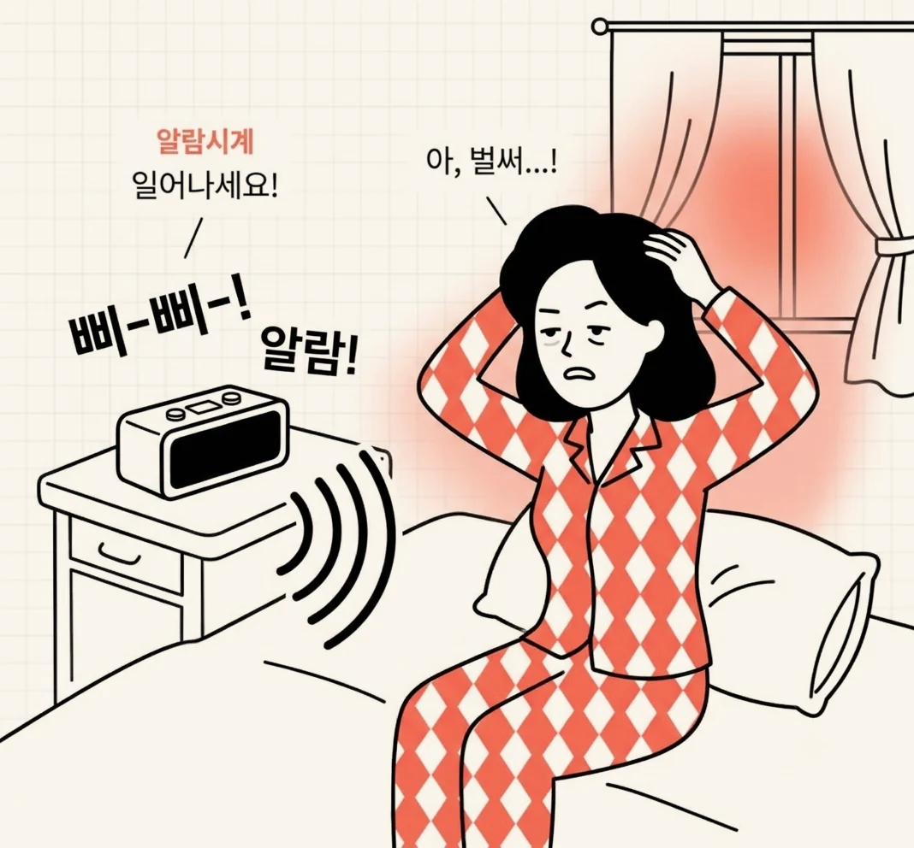
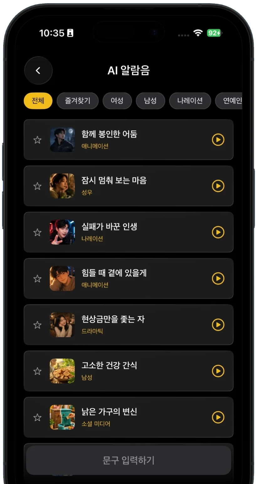

Zaco Labs
나만의 AI 알람음
매일 똑같은 벨소리에는 몸이 먼저 익숙해집니다. Waky는 성우, 나레이션, 애니메이션까지 다양한 AI 목소리가 내가 정한 문구를 읽어 주는 알람 앱입니다.
iOS · Android · 무료로 받기

Waky가 여느 알람과 다른 점
알람을 더 크게 만드는 대신, 무시하기 어렵게 만들었습니다.
-
골라 듣는 AI 목소리
여성, 남성, 성우, 나레이션, 애니메이션, 드라마틱까지. 카테고리별로 목소리를 골라 듣고 마음에 드는 것은 즐겨찾기에 담아 둡니다.
-
원하는 문구를 직접
‘오늘 발표 있는 날이야, 얼른 일어나’처럼 직접 적은 문장을 AI 목소리가 읽어 줍니다. 내 상황에 딱 맞는 알람음이 만들어집니다.
-
설정하기 전에 미리 듣기
목록의 재생 버튼으로 먼저 들어 보고 고릅니다. 다음 날 아침에야 실망하는 일이 없습니다.
-
쉽게 익숙해지지 않는다
같은 벨소리는 며칠이면 뇌가 걸러 냅니다. 매번 다른 목소리와 다른 문장은 그렇게 넘기기 어렵습니다.

쓰는 법은 세 단계
처음 켜고 알람을 맞추기까지 1분이면 충분합니다.
-

알람 시간을 맞춥니다
평소 쓰던 알람과 똑같이, 일어날 시간을 정합니다.
-

목소리와 문구를 고릅니다
AI 알람음 목록에서 마음에 드는 목소리를 고르거나, 직접 문구를 입력해 새 알람음을 만듭니다.
-

목소리가 부르면 일어납니다
아침에는 벨소리 대신, 내가 고른 목소리가 내가 고른 문장으로 깨웁니다.
자주 묻는 질문
더 궁금한 점은 메일로 물어봐 주세요.
알람 소리에 익숙해져서 못 일어날 때는 어떻게 하나요?
같은 소리를 매일 반복해서 들으면 뇌가 그 자극을 위협이 아닌 배경으로 처리하게 됩니다. 익숙해진 벨소리를 그대로 두고 볼륨만 키우는 것보다, 소리 자체를 주기적으로 바꾸는 편이 낫습니다. 특히 단순한 기계음보다 사람 목소리처럼 알아들어야 하는 소리는 그냥 흘려보내기 어렵습니다. Waky는 알람음을 여러 AI 목소리 중에서 골라 두고 바꿔 가며 쓸 수 있도록 만든 앱입니다.
알람을 여러 개 맞춰도 계속 자는 이유가 뭔가요?
알람을 껐다가 다시 자는 일이 반복되면 끄는 행동 자체가 거의 의식 없이 이뤄집니다. 나중에는 껐다는 기억조차 남지 않습니다. 게다가 깼다 다시 잠들기를 반복하면 잠이 얕게 끊겨서 정작 일어날 때 더 무겁게 느껴집니다. 알람 개수를 늘리는 것보다, 한 번에 확실히 인지되는 알람 하나를 쓰는 편이 낫습니다.
AI 목소리로 깨워 주는 알람 앱이 있나요?
있습니다. Waky가 그런 앱입니다. 기계적인 벨소리 대신 성우, 나레이션, 애니메이션, 드라마틱 같은 여러 결의 AI 목소리가 알람음을 읽어 줍니다. 카테고리별로 골라 미리 들어 보고 설정할 수 있고, 마음에 드는 목소리는 즐겨찾기에 담아 둘 수 있습니다. iOS와 Android에서 무료로 받을 수 있습니다.
일반 알람과 AI 알람은 무엇이 다른가요?
일반 알람은 정해진 벨소리를 반복 재생합니다. 소리에 내용이 없기 때문에 며칠만 지나면 배경음처럼 넘기기 쉽습니다. AI 알람은 목소리가 문장을 읽어 주므로 말의 내용을 알아들어야 하고, 목소리와 문구를 바꾸면 매일 다른 소리로 아침을 맞게 됩니다. 소리를 더 크게 만드는 대신 종류를 바꾸는 접근입니다.
원하는 문장으로 알람음을 만들 수 있는 앱이 있나요?
Waky에서 문구를 직접 입력하면 AI 목소리가 그 문장을 읽어 주는 알람음이 만들어집니다. ‘오늘 발표 있는 날이야’처럼 그날의 일정이나 스스로에게 하고 싶은 말을 넣어 두면, 아침에 그 문장을 그대로 듣게 됩니다. 만들기 전에 재생 버튼으로 미리 들어 볼 수 있습니다.
아침에 잘 일어나려면 알람 말고 무엇을 바꿔야 하나요?
잠드는 시각을 일정하게 유지하고, 일어난 직후에 밝은 빛을 보는 것이 흔히 권장됩니다. 다만 이런 습관은 자리 잡는 데 시간이 걸리기 때문에 그동안은 확실히 인지되는 알람을 함께 쓰는 편이 현실적입니다. 알람이 기상 습관을 대신하지는 못하지만, 습관이 자리 잡을 때까지 버텨 주는 장치는 됩니다.
AI 목소리는 어떤 종류가 있나요?
여성, 남성, 성우, 나레이션, 애니메이션, 드라마틱, 소셜 미디어 등 카테고리로 나뉘어 있습니다. 목록 위쪽에서 카테고리를 눌러 원하는 결의 목소리만 골라 볼 수 있습니다.
알람음을 직접 만들 수 있나요?
있습니다. ‘문구 입력하기’에 원하는 문장을 적으면, AI 목소리가 그 문장을 읽어 주는 알람음이 만들어집니다.
알람음을 미리 들어 볼 수 있나요?
목록의 재생 버튼을 누르면 바로 들어 볼 수 있습니다. 알람으로 설정하기 전에 확인해 보세요.
마음에 드는 알람음을 모아 둘 수 있나요?
별 모양을 누르면 즐겨찾기에 담깁니다. 즐겨찾기 탭에서 모아 둔 목소리만 따로 볼 수 있습니다.
문의나 제안은 어디로 보내나요?
zaco.labs@gmail.com 으로 보내 주세요. Waky를 만든 Zaco Labs가 직접 확인합니다.
내일 아침은 다른 목소리로 일어나 보세요
Waky는 iOS와 Android에서 무료로 받을 수 있습니다.